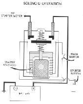

Home mechanic (basic tools) · Time: 20 to 30 min (estimate)
The starter relay (also called the solenoid) is a magnetic switch. A small current through its coil pulls heavy contacts together so the big current can reach the starter motor. Relays fail in three ways: the coil stops working (no click), the contacts burn (click but no crank), or the contacts weld shut (starter will not stop). On many bikes the main fuse sits in the relay body.
Safety
- Key OFF and battery negative (−) disconnected before you remove the relay.
- Do the function test with the relay off the bike, on a bench. Never bridge relay terminals on the bike.
- Keep the test battery leads apart. Do not touch the two battery terminals together.
You need
- A meter on continuity or the lowest ohms range.
- A charged 12 V battery and two leads with clips.
- Your wiring diagram for the coil wire colours. K-Light 125: the text names black and green/yellow, but the circuit drawing labels green/yellow and orange/red. Trust what you find on your own bike and diagram.
Steps
- Click test on the bike. Key ON, neutral, clutch pulled. Press start and listen or put a finger on the relay. A click means the coil works. No click: carry on to step 2.
- Coil supply on the bike. Unplug the small connector. Key ON, clutch pulled (or brake lever pulled on a scooter). Measure from the coil feed wire to earth: you should read battery voltage when start is pressed. No voltage: the fault is upstream (switches, fuse, wiring). See Test the starter circuit.
- Coil earth on the bike. Measure from the coil earth wire to the frame: you should have continuity when the start button is pressed and the bike is in neutral or the clutch is pulled. No continuity: Test the side stand, clutch and neutral switches.
- Remove the relay. Battery negative off. Remove the two heavy cables (note which is which) and the small connector. Check for a fuse in the relay body and test it.
- Coil test. Measure across the two small coil terminals. An open reading means a broken coil: replace the relay.
- Function test (K-Light 125 method). Connect the meter across the two heavy terminals. Using your test leads, connect the charged battery across the two small coil terminals. The relay should click and the meter should read near zero ohms. Disconnect: the reading must go back to open. - Clicks but still open: contacts burnt. Replace the relay. - Reads near zero even with no power to the coil: contacts welded. Replace the relay. This is the usual cause of a starter that keeps running. - Some relays have a diode inside and must be powered with the correct polarity. Check the diagram.
- Clean the heavy terminals and cable ends to bright metal.
- Fit the new or tested relay. Tighten the heavy cable nuts firmly and fit their rubber covers. A loose nut here heats up and causes slow cranking.
- Reconnect the battery, positive first, negative last.
Check your work
- The relay clicks and the engine cranks with the button pressed, and stops at once when you let go.
- The rubber covers are on both heavy terminals.
If it did not fix the problem
- Relay is good but the starter still does not turn: Remove and inspect the starter motor.
- Starter still runs on after release with a good relay: suspect a stuck start button or a shorted wire. See Clean a handlebar switch and Find a short circuit.